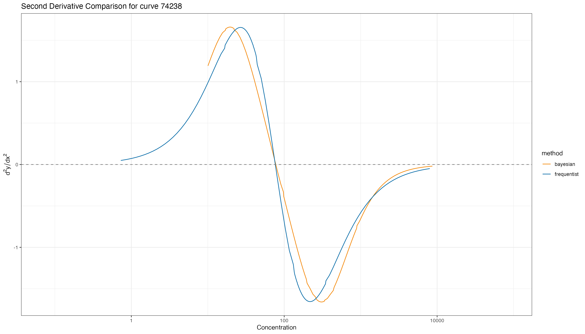
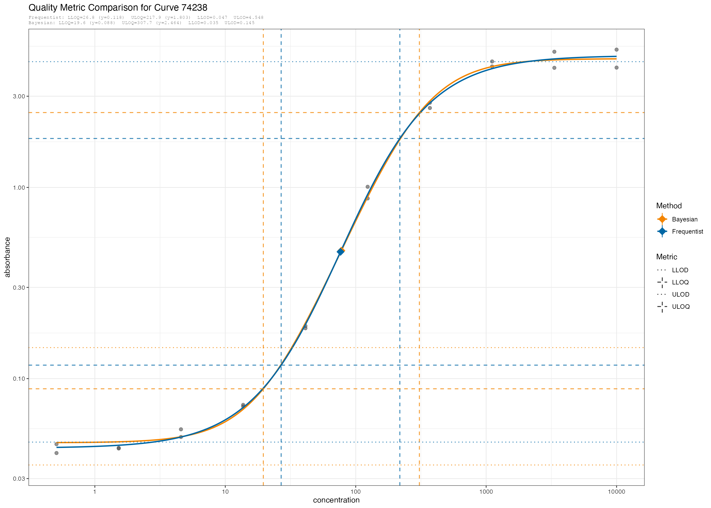

devtools::load_all()
#> ℹ Loading curveRmetrics
script_path <- system.file("vignette_helpers", "db_functions.R", package = "curveRmetrics")
if (file.exists(script_path)) {
source(script_path)
} else {
warning("Script file not found at expected path: ", script_path)
}
#> Warning: package 'dplyr' was built under R version 4.4.3
#>
#> Attaching package: 'dplyr'
#>
#> The following objects are masked from 'package:stats':
#>
#> filter, lag
#>
#> The following objects are masked from 'package:base':
#>
#> intersect, setdiff, setequal, union
conn <- get_db_connection()
freq_curves_df <- get_freq_curves(conn, "curveTest2")
bayes_curves_df <- get_bayes_curves(conn, "curveTest2")
bayes_param_ci_df <- get_bayes_param_ci(conn, "curveTest2")
freq_param_ci_df <- get_freq_parameters(conn, "curveTest2")
standards <- get_standards(conn, "curveTest2")
# combine both the Frequentest and Bayesian curves together for quality metrics
# calculations and comparisons.
curves_df <- rbind(freq_curves_df, bayes_curves_df)
# naturalize the parameters
curves_nat <- curves_df %>%
transform_to_natural_units()
head(curves_nat)
#> # A tibble: 6 × 13
#> curve_id method model_name a b c d g c_nat b_nat a_nat
#> <int64> <chr> <chr> <dbl> <dbl> <dbl> <dbl> <dbl> <dbl> <dbl> <dbl>
#> 1 74233 frequ… logistic4 -1.31 0.288 1.89 0.528 NA 78.2 0.663 0.0487
#> 2 74234 frequ… logistic5 -1.47 0.156 2.56 -0.558 0.166 364. 0.358 0.0338
#> 3 74236 frequ… loglogist… -1.40 3 2.02 0.726 1.42 104. 6.91 0.0403
#> 4 74235 frequ… logistic4 -1.47 0.504 3.45 -1.000 NA 2811. 1.16 0.0336
#> 5 74238 frequ… logistic4 -1.36 0.346 1.88 0.690 NA 76.4 0.796 0.0433
#> 6 74237 frequ… logistic4 -1.46 0.373 3.47 -0.784 NA 2931. 0.859 0.0346
#> # ℹ 2 more variables: d_nat <dbl>, g_nat <dbl>Select a specific curve_id to visualize comparisions.
The curveRmetrics package will compute Quality Control (QC)
metrics for each curve_id in the naturalized parameter set
(curves_nat).
Compute Inflection Point
nat_params <- compute_inflection_point(curves_nat, verbose = F)
head(nat_params)
#> # A tibble: 6 × 15
#> curve_id method model_name a b c d g c_nat b_nat a_nat
#> <int64> <chr> <chr> <dbl> <dbl> <dbl> <dbl> <dbl> <dbl> <dbl> <dbl>
#> 1 74233 frequ… logistic4 -1.31 0.288 1.89 0.528 NA 78.2 0.663 0.0487
#> 2 74234 frequ… logistic5 -1.47 0.156 2.56 -0.558 0.166 364. 0.358 0.0338
#> 3 74236 frequ… loglogist… -1.40 3 2.02 0.726 1.42 104. 6.91 0.0403
#> 4 74235 frequ… logistic4 -1.47 0.504 3.45 -1.000 NA 2811. 1.16 0.0336
#> 5 74238 frequ… logistic4 -1.36 0.346 1.88 0.690 NA 76.4 0.796 0.0433
#> 6 74237 frequ… logistic4 -1.46 0.373 3.47 -0.784 NA 2931. 0.859 0.0346
#> # ℹ 4 more variables: d_nat <dbl>, g_nat <dbl>, inflect_x <dbl>,
#> # inflect_y <dbl>Assay Sensitivity
nat_sens <- compute_assay_sensitivity(nat_params, verbose = T)
#> [compute_assay_sensitivity] curve_id=74233 (frequentist) inflect_x=78.2191 dydx=1.253867
#> [compute_assay_sensitivity] curve_id=74234 (frequentist) inflect_x=1623.8193 dydx=0.000000
#> [compute_assay_sensitivity] curve_id=74236 (frequentist) inflect_x=98.9211 dydx=0.000000
#> [compute_assay_sensitivity] curve_id=74235 (frequentist) inflect_x=2811.1083 dydx=0.014327
#> [compute_assay_sensitivity] curve_id=74238 (frequentist) inflect_x=76.4405 dydx=1.525534
#> [compute_assay_sensitivity] curve_id=74237 (frequentist) inflect_x=2931.4238 dydx=0.037745
#> [compute_assay_sensitivity] curve_id=74240 (frequentist) inflect_x=80.8552 dydx=1.472967
#> [compute_assay_sensitivity] curve_id=74239 (frequentist) inflect_x=1177.1242 dydx=0.000000
#> [compute_assay_sensitivity] curve_id=74241 (frequentist) inflect_x=78.8170 dydx=1.284726
#> [compute_assay_sensitivity] curve_id=74242 (frequentist) inflect_x=1921.4982 dydx=0.000000
#> [compute_assay_sensitivity] curve_id=74233 (bayesian) inflect_x=78.7953 dydx=0.000000
#> [compute_assay_sensitivity] curve_id=74234 (bayesian) inflect_x=1629.3557 dydx=0.000000
#> [compute_assay_sensitivity] curve_id=74235 (bayesian) inflect_x=9079.8828 dydx=0.000000
#> [compute_assay_sensitivity] curve_id=74236 (bayesian) inflect_x=93.3025 dydx=0.000000
#> [compute_assay_sensitivity] curve_id=74237 (bayesian) inflect_x=4720.8039 dydx=0.000000
#> [compute_assay_sensitivity] curve_id=74238 (bayesian) inflect_x=77.5913 dydx=0.000000
#> [compute_assay_sensitivity] curve_id=74239 (bayesian) inflect_x=1949.2585 dydx=0.000000
#> [compute_assay_sensitivity] curve_id=74240 (bayesian) inflect_x=79.5490 dydx=0.000000
#> [compute_assay_sensitivity] curve_id=74241 (bayesian) inflect_x=97.3891 dydx=0.000000
#> [compute_assay_sensitivity] curve_id=74242 (bayesian) inflect_x=1421.1457 dydx=0.000000
#> [compute_assay_sensitivity] curve_id=75375 (bayesian) inflect_x=54.9780 dydx=0.000000
#> [compute_assay_sensitivity] curve_id=75376 (bayesian) inflect_x=62.1056 dydx=0.000000
#> [compute_assay_sensitivity] curve_id=75377 (bayesian) inflect_x=52.1438 dydx=0.000000
#> [compute_assay_sensitivity] curve_id=75378 (bayesian) inflect_x=55.9594 dydx=0.000000
#> [compute_assay_sensitivity] curve_id=75379 (bayesian) inflect_x=66.5617 dydx=0.000000
head(nat_sens)
#> # A tibble: 6 × 4
#> curve_id method inflect_x dydx_inflect
#> <int64> <chr> <dbl> <dbl>
#> 1 74233 frequentist 78.2 1.25e+ 0
#> 2 74234 frequentist 1624. 0
#> 3 74236 frequentist 98.9 3.37e-11
#> 4 74235 frequentist 2811. 1.43e- 2
#> 5 74238 frequentist 76.4 1.53e+ 0
#> 6 74237 frequentist 2931. 3.77e- 2Limits of Detection
First the raw confidence/credible intervals and parameters are transformed to natural units and combined together in one dataset for comparison.
bayes_param_ci_nat <- transform_ci_to_natural_units(bayes_param_ci_df)
freq_param_ci_nat <- transform_ci_to_natural_units(freq_param_ci_df)
params_ci_nat <- rbind(freq_param_ci_nat, bayes_param_ci_nat)
params_ci_nat
#> # A tibble: 102 × 12
#> curve_id method model_name converged parameter estimate conf_lower conf_upper
#> <int64> <chr> <chr> <lgl> <chr> <dbl> <dbl> <dbl>
#> 1 74233 frequ… logistic4 TRUE AIC -46.9 -46.9 -46.9
#> 2 74233 frequ… logistic4 TRUE a -1.31 -1.37 -1.25
#> 3 74233 frequ… logistic4 TRUE b 0.288 0.235 0.341
#> 4 74233 frequ… logistic4 TRUE c 1.89 1.83 1.95
#> 5 74233 frequ… logistic4 TRUE d 0.528 0.469 0.588
#> 6 74234 frequ… logistic5 TRUE AIC -67.1 -67.1 -67.1
#> 7 74234 frequ… logistic5 TRUE a -1.47 -1.50 -1.45
#> 8 74234 frequ… logistic5 TRUE b 0.156 -0.138 0.449
#> 9 74234 frequ… logistic5 TRUE c 2.56 1.93 3.19
#> 10 74234 frequ… logistic5 TRUE d -0.558 -1.18 0.0663
#> # ℹ 92 more rows
#> # ℹ 4 more variables: is_best_model <lgl>, estimate_nat <dbl>,
#> # conf_lower_nat <dbl>, conf_upper_nat <dbl>
lods_nat <- generate_lods(param_ci_df = params_ci_nat, verbose = T)
#> [generate_lods] curve_id=74233 (frequentist) LLOD=0.0557 ULOD=2.9417
#> [generate_lods] curve_id=74234 (frequentist) LLOD=0.0358 ULOD=0.0657
#> [generate_lods] curve_id=74236 (frequentist) LLOD=0.0446 ULOD=4.8797
#> [generate_lods] curve_id=74235 (frequentist) LLOD=0.0358 ULOD=0.0492
#> [generate_lods] curve_id=74238 (frequentist) LLOD=0.0465 ULOD=4.5484
#> [generate_lods] curve_id=74237 (frequentist) LLOD=0.0366 ULOD=0.0964
#> [generate_lods] curve_id=74240 (frequentist) LLOD=0.0600 ULOD=3.4897
#> [generate_lods] curve_id=74239 (frequentist) LLOD=0.0385 ULOD=0.0796
#> [generate_lods] curve_id=74241 (frequentist) LLOD=0.0492 ULOD=3.5923
#> [generate_lods] curve_id=74242 (frequentist) LLOD=0.0378 ULOD=0.0980
#> [generate_lods] curve_id=74233 (bayesian) LLOD=0.0344 ULOD=0.1808
#> [generate_lods] curve_id=74236 (bayesian) LLOD=0.0345 ULOD=0.0929
#> [generate_lods] curve_id=74238 (bayesian) LLOD=0.0353 ULOD=0.1453
#> [generate_lods] curve_id=74240 (bayesian) LLOD=0.0341 ULOD=0.1566
#> [generate_lods] curve_id=74241 (bayesian) LLOD=0.0342 ULOD=0.1344
#> [generate_lods] curve_id=75375 (bayesian) LLOD=0.0206 ULOD=3.2008
#> [generate_lods] curve_id=75376 (bayesian) LLOD=0.0179 ULOD=4.5332
#> [generate_lods] curve_id=75377 (bayesian) LLOD=0.0175 ULOD=4.2726
#> [generate_lods] curve_id=75378 (bayesian) LLOD=0.0235 ULOD=3.8320
#> [generate_lods] curve_id=75379 (bayesian) LLOD=0.0178 ULOD=3.5991
lods_nat
#> # A tibble: 20 × 4
#> curve_id method llod ulod
#> <int64> <chr> <dbl> <dbl>
#> 1 74233 frequentist 0.0557 2.94
#> 2 74234 frequentist 0.0358 0.0657
#> 3 74236 frequentist 0.0446 4.88
#> 4 74235 frequentist 0.0358 0.0492
#> 5 74238 frequentist 0.0465 4.55
#> 6 74237 frequentist 0.0366 0.0964
#> 7 74240 frequentist 0.0600 3.49
#> 8 74239 frequentist 0.0385 0.0796
#> 9 74241 frequentist 0.0492 3.59
#> 10 74242 frequentist 0.0378 0.0980
#> 11 74233 bayesian 0.0344 0.181
#> 12 74236 bayesian 0.0345 0.0929
#> 13 74238 bayesian 0.0353 0.145
#> 14 74240 bayesian 0.0341 0.157
#> 15 74241 bayesian 0.0342 0.134
#> 16 75375 bayesian 0.0206 3.20
#> 17 75376 bayesian 0.0179 4.53
#> 18 75377 bayesian 0.0175 4.27
#> 19 75378 bayesian 0.0235 3.83
#> 20 75379 bayesian 0.0178 3.60Reliable Detection Limits
rdl_nat <- compute_mdc_rdl(param_ci_df = params_ci_nat, lods = lods_nat, verbose = F)
head(rdl_nat)
#> # A tibble: 6 × 6
#> curve_id method mindc maxdc minrdl maxrdl
#> <int64> <chr> <dbl> <dbl> <dbl> <dbl>
#> 1 74233 frequentist 1.31 275. 1.44 166.
#> 2 74234 frequentist 126. 405. 281. 200.
#> 3 74236 frequentist 25.7 147. 26.1 132.
#> 4 74235 frequentist 55.4 717. 339. 198.
#> 5 74238 frequentist 0.228 584. 0.242 327.
#> 6 74237 frequentist 81.3 2699. 156. 1148.Limits of Quantification
Curvature-Based
d2_natural <- compute_second_deriv_df(curves_df = curves_nat)
head(d2_natural)
#> # A tibble: 6 × 4
#> curve_id method concentration d2x_y
#> <int64> <chr> <dbl> <dbl>
#> 1 74233 frequentist 1.62 0.0634
#> 2 74233 frequentist 1.79 0.0736
#> 3 74233 frequentist 1.98 0.0855
#> 4 74233 frequentist 2.19 0.0993
#> 5 74233 frequentist 2.42 0.115
#> 6 74233 frequentist 2.68 0.134
curve_id <- 74238
compare_second_derivative(second_derivative_df = d2_natural, curve_id = curve_id)
Calculate the shaped-based Limits of Quantification (LOQs) from the second derivative
loqs_nat <- compute_loqs(curves_nat, second_deriv_df = d2_natural, verbose = F)
head(loqs_nat)
#> # A tibble: 6 × 6
#> curve_id method lloq uloq lloq_y uloq_y
#> <int64> <chr> <dbl> <dbl> <dbl> <dbl>
#> 1 74233 frequentist 32.7 187. 0.119 1.38
#> 2 74234 frequentist 316. 1520. 0.0401 0.0936
#> 3 74236 frequentist 34.9 313. 0.140 2.14
#> 4 74235 frequentist 610. 12944. 0.0423 0.0794
#> 5 74238 frequentist 26.8 218. 0.118 1.80
#> 6 74237 frequentist 946. 9086. 0.0481 0.118Attach Quality metrics to the original curve dataframe for plotting and uploading back to database.
curves_quality_df <-attach_quality_metrics(curves_df = curves_df,
lods = lods_nat,
rdls = rdl_nat,
sensitivity = nat_sens,
loqs = loqs_nat,
inflection = nat_params)
head(curves_quality_df)
#> curve_id method model_name a b c d
#> 1 74233 bayesian logistic5 0.04771170 1.8195108 260.708354 3.5652730
#> 2 74233 frequentist logistic4 -1.31252642 0.2880826 1.893313 0.5283548
#> 3 74234 bayesian logistic5 0.03361315 2.0333195 695.199062 0.2788212
#> 4 74234 frequentist logistic5 -1.47166288 0.1556315 2.561102 -0.5581360
#> 5 74235 bayesian logistic5 0.03363876 1.1893294 822.693631 0.1950582
#> 6 74235 frequentist logistic4 -1.47387134 0.5035938 3.448878 -0.9998286
#> g inflect_x inflect_y dydx_inflect llod ulod
#> 1 1.0193515 78.79529 0.41243816 0.000000 0.03435969 0.18084280
#> 2 NA 78.21909 0.40542841 1.253867 0.05566870 2.94165184
#> 3 0.1572918 1629.35575 0.09680940 0.000000 NA NA
#> 4 0.1655002 1623.81926 0.09662746 0.000000 0.03577603 0.06567752
#> 5 0.1192832 9079.88284 0.08100320 0.000000 NA NA
#> 6 NA 2811.10826 0.05796289 0.014327 0.03575789 0.04921867
#> mindc maxdc minrdl maxrdl lloq uloq lloq_y
#> 1 0.9455817 115.0604 1.219714 16.58356 22.90313 272.6796 0.09012197
#> 2 1.3096990 275.3071 1.437236 165.81767 32.65180 187.3687 0.11925698
#> 3 NA NA NA NA 375.15946 1835.5360 0.04310485
#> 4 125.9957124 404.5993 280.791810 200.29699 316.30427 1519.8444 0.04010038
#> 5 NA NA NA NA 379.88176 6793.6328 0.03997469
#> 6 55.3854862 716.5442 339.438715 197.94924 610.44557 12944.3075 0.04229633
#> uloq_y
#> 1 1.90210665
#> 2 1.37823067
#> 3 0.10270638
#> 4 0.09357620
#> 5 0.07652535
#> 6 0.07943149
compare_quality_metrics(curves_nat, standards, curves_quality_df, curve_id = curve_id)